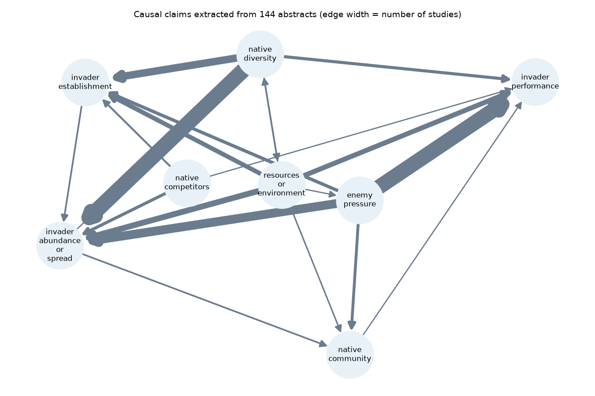

Hypothesis Ledger
Can a language model read ecology abstracts, pull out their causal claims with the exact sentence that supports each one, and tell whether a hypothesis holds, the way experts did?
One mark per study
Top half: what the experts recorded. Bottom half: what the model concluded from the abstract. Rows group studies by the design the model read from the abstract. Hatched marks are papers whose expert labels differ between species. Select a mark to read the record.
How a study becomes a record
- Expert labels. The Hi Knowledge comparisons in the Open Research Knowledge Graph list 318 papers on the enemy release and biotic resistance hypotheses, each marked as supporting, questioning or undecided, with habitat and research method.
- Abstracts. Missing DOIs are resolved by title on Crossref; abstracts come from OpenAlex, Crossref or Semantic Scholar. 144 paper and hypothesis pairs have one.
- Extraction. GPT-4o-mini returns structured output: every causal claim with cause, effect, direction, organism, habitat and a verbatim quote, then the study design and a verdict. Quotes that are not in the abstract go back to the model once for correction.
- Knowledge graph. Each claim becomes RDF linked to the ORKG study and hypothesis, with PROV-O for the quote, the source DOI and the extraction run. SHACL shapes check that no claim is stored without a quote and a source.
- Comparison. Verdicts are scored against the experts, a second model call acts as judge, and SPARQL queries answer questions such as "where does the model disagree, and which sentence did it rely on?"
The verdict was also produced in a second condition, directly and without the claims step, to see whether writing out the claims first changes the answer.
What came out
On the 131 studies with a single expert label, the model agreed with the experts in three of four cases. Writing out the claims first did not raise accuracy, but it recognised more mixed results as undecided.
| Condition | Accuracy | Macro-F1 | Undecided found (of 20) |
|---|---|---|---|
| Always the most frequent label | 0.43 | – | – |
| Verdict directly | 0.76 | 0.60 | 2 |
| Claims first, then verdict | 0.75 | 0.66 | 7 |
Of 450 extracted claims, 99.3% carry a quote that appears word for word in the abstract after one correction round; the rest are flagged in the graph rather than dropped. The study design the model read from the abstract matched the experts' method label in 91% of studies.
The most interesting result sits one level up, in the synthesis. Whether a hypothesis looks supported depends on how it was tested, and in opposite directions for the two hypotheses:
| Expert labels | Experimental studies supporting | Observational studies supporting | Fisher p |
|---|---|---|---|
| Enemy release | 4 of 13 | 25 of 34 | .017 |
| Biotic resistance | 16 of 28 | 6 of 27 | .013 |
The model's verdicts show the same two directions, but weaker (p = .12 and .10), and it rates biotic resistance as supported more often than the experts did (55% against 42%). A synthesis that pools experiments and field comparisons answers a different causal question than it seems to, and that is exactly the kind of condition an assistant for hypothesis assessment has to keep visible.
A second model call asked to judge the verdicts called 85.5% of them correct; 74.8% were. Its agreement with the expert check was only slightly better than chance (Cohen's κ = 0.20), so it cannot replace that check.
Where it breaks: the direction of an effect
The weak point is the sign of a causal claim. In the record below, more plant diversity means more resistance to the invader, so its effect on invader establishment should be "decreases". The model wrote "increases", because the sentence talks about resistance. Across all studies it coded enemy pressure as increasing invader performance 30 times and decreasing it 21 times.
# from results/ledger.ttl hl:claim_R52077_biotic_resistance_0 a hl:CausalClaim ; prov:value "Functional group identity and diversity of resident plant communities are good indicators of biotic resistance to invasion by introduced Phragmites australis." ; prov:wasDerivedFrom <https://doi.org/10.1111/1365-2745.12016> ; hl:causeNode hl:native_diversity ; hl:effectNode hl:invader_establishment ; hl:direction hl:increases ; # should be hl:decreases hl:quoteVerified true .

Limitations
The experts read full texts; the model read abstracts, so some disagreements are probably caused by information that is not in the abstract. Only 144 of 318 papers had a retrievable abstract, and terrestrial studies dominate, so habitats could not be compared. One model, one run at temperature 0, no prompt tuning on a separate set. The categories for the causal graph were chosen before the run.